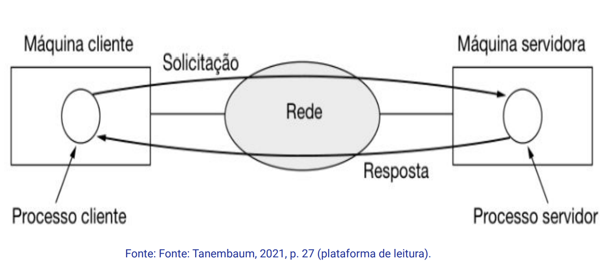
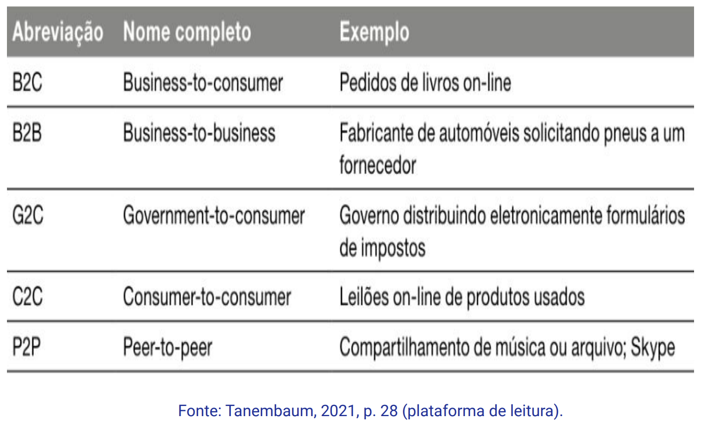
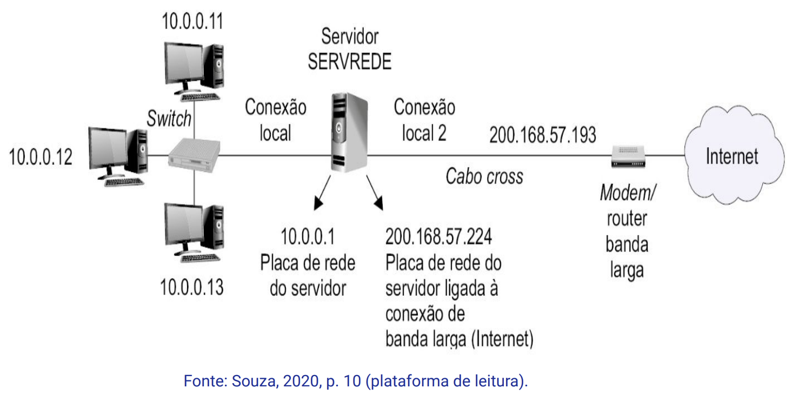

Disciplinas
INFRAESTRUTURA PARA SISTEMAS DE SOFTWARE-T01-2024-2 Concluído
Materiais
Vídeo 1 - [UFMS Digital] Infraestrutura para Sistemas de Software - Módulo 1 - Unidade 1 - O que são redes de computadores sendProf.° ministrante: Carlos Alberto da Silva
Conteúdo
O que são redes de computadores?
- Histórico das redes de comunicação
- Introdução às redes de computadores
Histórico das redes de comunicação.
Tecnologias (evolução)- Século XVIII - época dos grandes sistemas mecânicos (revolução industrial).
- Século XIX - era das máquinas a vapor.
- Século XX - campo de aquisição, do processamento e da distribuição de informações.
- O modelo da primeira rede de comunicação compartilhada começou pelas redes de telefonia analógica.
- Eram compostas de fios e cabos de cobre e centrais telefônicas
- Que faziam o encaminhamento das chamadas.
- Anos 1970 - surgimento das primeiras redes compartilhadas de comunicação de dados.
- Entre 1970 e 1980, temos as redes de X.25 e Frame-relay
- com permissão de comunicação entre pontos.
- Anos de 1980 - surgimento da internet em âmbito mundial e pública.
- Os equipamentos responsáveis pelo encaminhamento dos dados são chamados de roteadores.
- Baseiam-se no endereço de destino, o endereço IP, para definir o caminho dos dados.
- Por analogia, o número do telefone em uma rede de telefonia.
- Os dispositivos de rede são interligados pelos seguintes meios de transmissão/linhas de comunicação/links:
- cabo de: fibras ópticas, coaxial ou ethernet;
- redes públicas como frame-relay ou x.25;
- links de rádio ou redes sem fio (Wifi);
- satélites.
- Tendo como resultado final, uma rede compartilhada de dados.
- Dependendo da topologia do local:
- Em regiões remotas e sem infraestrutura, o uso de canais (links) por satélite é o ideal.
- Em regiões metropolitanas, a fibra óptica é uma opção.
- Em áreas abertas, o sinal de Wifi seria uma opção.
- As redes externas utilizadas, por exemplo, na comunicação de uma matriz com suas filiais são chamadas de redes WAN (Wide Area Networks).
- As redes internas das empresas são chamadas de redes locais ou LAN (Local Area Network).
Introdução às redes de computadores.
A fusão dos computadores e das comunicações teve uma profunda influência na forma como os sistemas computacionais são organizados.
Conceito de rede de computadores pode ser definido como "um conjunto de dispositivos de computação autônomos interconectados" (TANEMBAUM, 2020, p. 3 plataforma de leitura).
- Existem redes de computadores de diversos tamanhos, modelos e formas
- Que normalmente estão interconectadas para criar redes maiores, como a internet.
- A internet também é conhecida como:
- a redes das redes;
- a rede mundial de computadores;
- a rede internacional;
- redes interligadas.
- A internet oferece as seguintes aplicabilidades:
- acesso à informação;
- comunicação entre pessoas;
- comércio eletrônico;
- entretenimento;
- internet das coisas (IoT).
- O acesso à informação pode ser feito de várias formas, o mais comum é usar um navegador Web (google).
- Estas informações na Internet são acessadas por meio de um modelo cliente-servidor.
A execução: o processo cliente envia uma mensagem de Solicitação para a máquina servidora, que recebe, processa e responde com uma mensagem de Resposta.
- Outro modelo cliente-servidor é o peer-to-peer (P2P)
- um sistema não hierárquico
- e não existem clientes e servidores fixos.
- Este modelo compartilha arquivos, vídeos, músicas e livros.
A comunicação entre pessoas é a resposta do século XXI ao telefone do século XIX.
Exemplo de comunicação entre pessoas: correio eletrônico, mensagens instantâneas, Twitter, redes sociais, etc.
Comércio eletrônicoRelacionado à compra, aluguel e venda de produtos ou serviços por meio da Internet.
Além de: instituições financeiras (fintechs) e leilões on-line.
 Entretenimento- Os usuários podem alugar ou comprar:
- filmes e músicas;
- eventos das tvs tradicionais;
- eventos interativos;
- jogos eletrônicos;
- e os mundos virtuais.
A internet das coisas está relacionada aos equipamentos eletrônicos inteligentes que podem ser configurados e controlados pela internet.
Exemplos: ar condicionado, cafeteira, refrigerador, portão eletrônico, interfone, ventiladores, iluminação (lâmpadas), fogão, forno, etc.
- As redes de computadores podem ser classificadas em:
- Redes locais, Local Area Network (LANs);
- Redes metropolitanas, Metropolitan Area Network (MANs);
- Redes de grandes distâncias, Wide Area Network (WANs).
- É necessário planejar ao se projetar uma rede:
- 1. a quantidade de dispositivos que se interconectam na rede interna (LAN) ou intranet;
- 2. o acesso à rede externa (WAN) ou internet;
- 3. e elaborar o plano de endereçamento, ou seja, definir os endereços IP de cada dispositivo da rede.
rede interna (intranet) com números IPs de 10.0.0.1 a 10.0.0.13 ;
rede externa (internet) com números IP de 200.168.57.224 e 200.168.57.193 .
Referências:
KUROSE, Jim; ROSS, Keith W. Redes de Computadores e a Internet: uma Abordagem Top-down, 8 Edição. Editora Pearson, 2021. ISBN: 9788582605592. p. 1-26. Disponível na Biblioteca Digital da UFMS.
SOUZA, Lindeberg Barros de. Administração de redes locais. 2. São Paulo: Érica, 2020. 1 recurso online. (Eixos). p. 9-10. ISBN 9788536533698. Disponível na Biblioteca Digital da UFMS.
TANENBAUM, Andrew S.; FEAMSTER, Nicholas; WETHERALL, David J.; Redes de Computadores, 6ª Edição. Editora Pearson, 2021. ISBN: 9788582605615. p. 1-39. Disponível na Biblioteca Digital da UFMS.